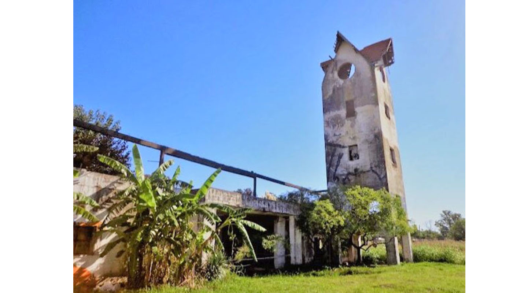

Es una propuesta ideal para una escapada económica de fin de semana: senderos, lagunas, cabalgatas, camping, gastronomía y alojamiento en plena naturaleza. El Distrito Ecológico Roggero se consolida como uno de los destinos de cercanía más elegidos de la región. Durante la temporada de verano fue visitado por más de 120 mil personas.
Con la llegada del otoño, el oeste del conurbano bonaerense ofrece una alternativa cada vez más buscada por quienes quieren desconectar sin alejarse demasiado: el Distrito Ecológico Roggero, un corredor turístico natural ubicado entre La Reja y Francisco Álvarez, que combina paisajes otoñales, actividades al aire libre, propuestas gastronómicas y experiencias de turismo sustentable a solo una hora de la Ciudad de Buenos Aires.
En esta época del año, el paisaje del distrito se transforma. Los árboles se tiñen de tonos ocres y dorados y convierten la zona en un escenario ideal para el descanso, la fotografía y el contacto con la naturaleza. El circuito integra algunos de los espacios más importantes del oeste en materia ambiental, como la Reserva Natural Municipal Los Robles, la Estancia El Dorado, la Plaza Favaloro y el Paseo Costero.
Para quienes buscan aventura y movimiento, el DER ofrece senderismo, trekking, avistaje de aves, cabalgatas y camping, además de senderos guiados y autoguiados para recorrer la flora y fauna local. Entre los puntos más elegidos aparecen los miradores naturales del Dique Roggero, el lago San Francisco y la laguna de Plaza Favaloro, ideales para disfrutar del atardecer.
También hay opciones para quienes priorizan el descanso.
En Los Robles, ubicado en Benito Juárez y Williams, se puede pasar el día, hacer picnic, acampar o alojarse en posadas y cabañas rodeadas de bosque. En tanto, Estancia El Dorado, sobre Carlos De Linneo 180, suma una experiencia de glamping, una modalidad que combina naturaleza y confort y que gana cada vez más adeptos entre quienes buscan una escapada diferente.
La propuesta se completa con una fuerte oferta gastronómica: el Paseo Gastronómico de Los Robles, la cafetería Dymhouse junto a la laguna, el sector gastronómico de Plaza Favaloro, el Bodegón El Dorado y Rancho Viejo, donde además se organizan jornadas de campo y cabalgatas.
Como plus cultural, el circuito incluye la Casa Museo Rancho Los Estribos, donde vivió y trabajó el reconocido artista Florencio Molina Campos, un espacio que preserva parte de la historia y el patrimonio del oeste bonaerense.En Los Robles, ubicado en Benito Juárez y Williams, se puede pasar el día, hacer picnic, acampar o alojarse en posadas y cabañas rodeadas de bosque. En tanto, Estancia
El Dorado, sobre Carlos De Linneo 180, suma una experiencia de glamping, una modalidad que combina naturaleza y confort y que gana cada vez más adeptos entre quienes buscan una escapada diferente.
